📚 1. Introducción a los Diagramas de Casos de Uso
¿Qué es un Diagrama de Casos de Uso?
Un diagrama de casos de uso es una representación visual de las funcionalidades que un sistema ofrece desde la perspectiva de sus usuarios externos (actores). Es una de las herramientas más importantes en el análisis de requisitos porque:
- Comunica claramente qué hace el sistema sin entrar en detalles de implementación
- Identifica a todos los actores que interactúan con el sistema
- Define el alcance y los límites del sistema
- Facilita la comunicación entre stakeholders técnicos y no técnicos
- Sirve de base para la estimación, planificación y testing
Historia: Ivar Jacobson y el Origen
Ivar Jacobson introdujo los casos de uso en 1986 como parte de su metodología OOSE (Object-Oriented Software Engineering). La idea revolucionaria fue:
"En lugar de comenzar con la estructura interna del sistema, comencemos con lo que los usuarios quieren lograr"
Este enfoque centrado en el usuario se convirtió en un pilar fundamental de UML y las metodologías ágiles modernas.
Propósito y Valor en el Análisis de Sistemas
Los diagramas de casos de uso aportan valor en múltiples etapas del proyecto:
🎯 En Análisis
- Capturar requisitos funcionales
- Identificar actores del sistema
- Definir alcance del proyecto
📋 En Diseño
- Base para diagramas de secuencia
- Guía para arquitectura del sistema
- Identificación de componentes
🧪 En Testing
- Casos de prueba basados en CU
- Cobertura funcional
- Escenarios de aceptación
💼 En Gestión
- Estimación de esfuerzo
- Priorización de funcionalidades
- Tracking de progreso
¿Cuándo Usar Diagramas de Casos de Uso?
| Situación |
¿Usar CU? |
Razón |
| Proyecto nuevo desde cero |
✅ Sí |
Establece visión compartida del sistema |
| Sistema con múltiples tipos de usuarios |
✅ Sí |
Clarifica roles y permisos |
| Requisitos complejos o ambiguos |
✅ Sí |
Facilita diálogo con stakeholders |
| Sistema muy simple (CRUD básico) |
⚠️ Opcional |
Puede ser overhead innecesario |
| Prototipo rápido o spike técnico |
❌ No |
Prioridad es velocidad de implementación |
⚠️ Casos de Uso NO son...
- ❌ Diagramas de flujo: No muestran secuencia detallada de pasos
- ❌ Diagramas de clases: No modelan estructura interna del código
- ❌ Especificaciones técnicas: No definen tecnologías o implementación
- ❌ Documentación de API: No describen endpoints o interfaces técnicas
Los casos de uso describen QUÉ hace el sistema, NO CÓMO lo hace.
🔧 2. Elementos Fundamentales de los Casos de Uso
Todo diagrama de casos de uso se construye con cuatro elementos básicos: actores, casos de uso, relaciones y frontera del sistema. Dominar estos elementos es esencial para crear diagramas efectivos.
2.1 Actores
Un actor es cualquier entidad externa que interactúa con el sistema. Puede ser una persona, un rol, u otro sistema.
Características de los Actores:
- ✅ Están fuera del sistema (no son parte de la implementación)
- ✅ Representan roles, no personas específicas (ej: "Gerente", no "Juan Pérez")
- ✅ Inician o reciben información del sistema
- ✅ Pueden ser humanos, sistemas externos, dispositivos, temporizadores, etc.
Tipos de Actores:
📊 Tipos de Actores en un Sistema
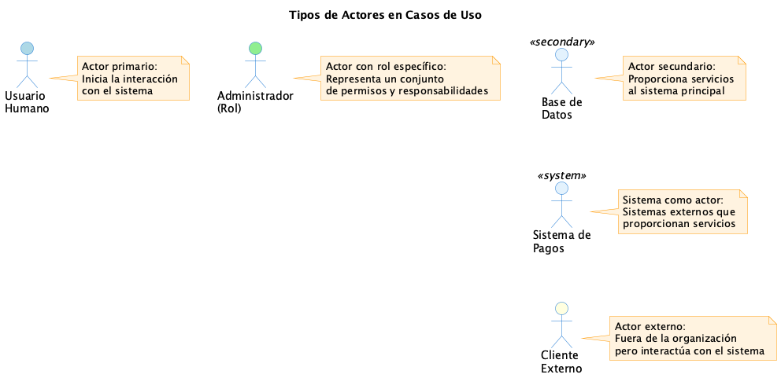
Tipos principales:
- Primario: Inicia la interacción con el sistema (ej: Cliente, Usuario)
- Secundario: Proporciona servicios al sistema (ej: Base de datos, Sistema de pagos)
- Sistema externo: Otro sistema con el que se integra (ej: API de terceros)
Ejemplo: Actores de Liskov Project
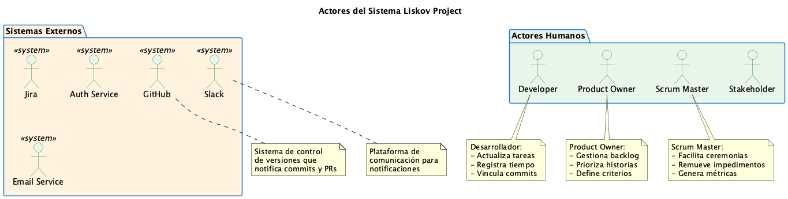
Observaciones sobre Liskov:
- Actores humanos: Developer, Product Owner, Scrum Master, Stakeholder (roles del equipo ágil)
- Sistemas externos: GitHub (control de versiones), Slack (notificaciones), Jira (integración), Auth Service (autenticación)
- Cada actor tiene responsabilidades claramente diferenciadas
2.2 Casos de Uso
Un caso de uso representa una funcionalidad o servicio que el sistema proporciona a un actor para alcanzar un objetivo específico.
✓ Características de un buen Caso de Uso:
- Nombrado con verbo en infinitivo + objeto: "Registrar Usuario", "Generar Reporte"
- Representa valor para el actor: Logra un objetivo significativo
- Granularidad apropiada: Ni muy general ni demasiado detallado
- Independiente de implementación: Describe funcionalidad, no tecnología
- Completo en sí mismo: Tiene inicio, desarrollo y fin
📊 Casos de Uso Básicos
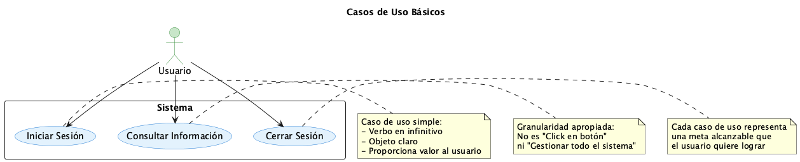
Test del "Jefe del Jefe" para Granularidad:
Pregunta clave: ¿Al jefe de mi jefe le importa este caso de uso?
- ✅ SÍ: "Procesar Venta" → Granularidad correcta
- ❌ NO: "Validar formato de email" → Demasiado detallado (es parte de "Registrar Usuario")
- ❌ NO: "Gestionar Sistema Completo" → Demasiado general (dividir en CU más específicos)
2.3 Relaciones Actor-Caso de Uso
Las relaciones entre actores y casos de uso se representan con líneas simples (asociaciones). Indican que el actor participa en ese caso de uso.
Tipos de participación:
- Actor inicia el caso de uso: El actor es quien desencadena la acción (ej: Cliente → Realizar Compra)
- Sistema notifica al actor: El caso de uso envía información al actor (ej: Generar Reporte → Gerente)
- Múltiples actores: Un caso de uso puede involucrar a varios actores con roles diferentes
💡 Buenas Prácticas:
- ✅ Un actor debe interactuar con al menos un caso de uso (si no, probablemente no es un actor relevante)
- ✅ Un caso de uso debe tener al menos un actor (si no, ¿quién lo usa?)
- ✅ Evitar líneas que se crucen innecesariamente (mejora legibilidad)
- ⚠️ Multiplicidad raramente se especifica en diagramas de CU (a diferencia de diagramas de clases)
2.4 Frontera del Sistema (System Boundary)
La frontera del sistema es un rectángulo que delimita qué está dentro del sistema (lo que desarrollamos) y qué está fuera (actores externos).
📊 Frontera del Sistema - Ejemplo
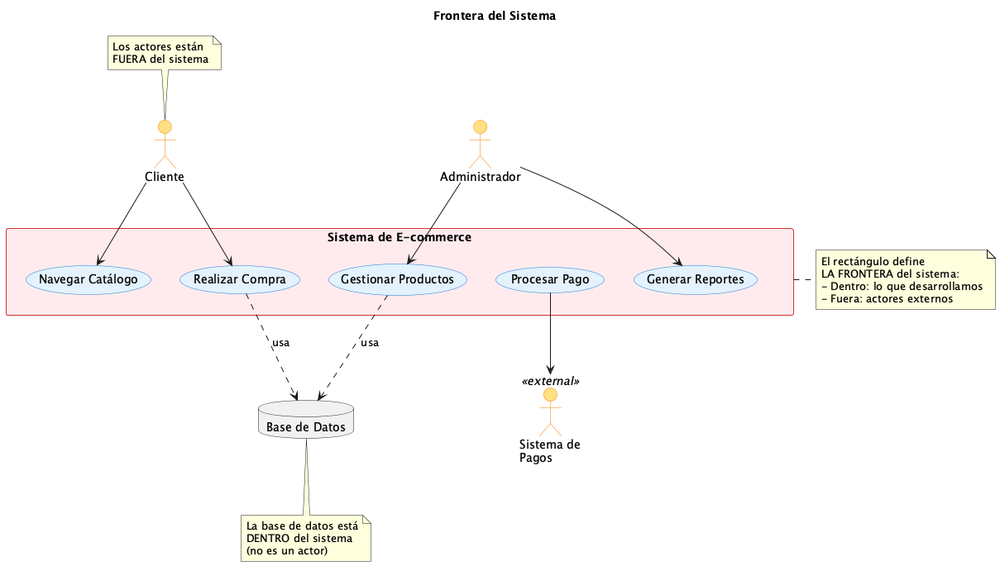
Observaciones clave:
- Actores: SIEMPRE fuera del rectángulo (son externos al sistema)
- Casos de Uso: SIEMPRE dentro del rectángulo (son funcionalidades del sistema)
- Base de datos: Típicamente NO es un actor (es parte interna del sistema)
- Sistemas externos: Son actores si el sistema se comunica con ellos
❌ Error Común: Base de Datos como Actor
Incorrecto: Modelar la base de datos como actor externo.
Correcto: La BD es infraestructura interna del sistema, NO un actor. Los actores son entidades que tienen objetivos e inician interacciones.
Excepción: Si consultamos una base de datos legada de otro sistema sobre la cual no tenemos control, ENTONCES sí puede modelarse como actor secundario.
2.5 Ejemplo Completo Básico: Sistema de Biblioteca
Integremos todos los elementos fundamentales en un ejemplo completo de un sistema de gestión de biblioteca:
📊 Sistema de Biblioteca - Diagrama Completo
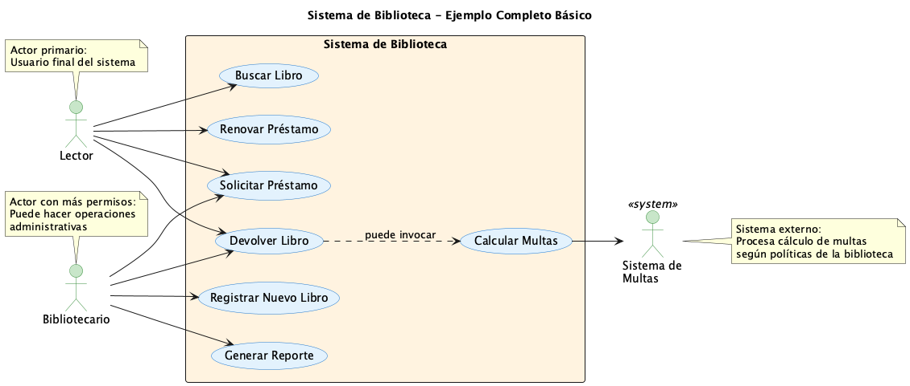
✅ Análisis del Diagrama de Biblioteca:
Actores identificados (3):
- Lector: Usuario final que utiliza los servicios de la biblioteca
- Bibliotecario: Personal que gestiona el sistema y asiste a lectores
- Sistema de Multas: Sistema externo que calcula penalizaciones
Casos de uso (7):
| Caso de Uso |
Actor(es) |
Tipo |
| Buscar Libro |
Lector |
Consulta |
| Solicitar Préstamo |
Lector, Bibliotecario |
Transacción |
| Devolver Libro |
Lector, Bibliotecario |
Transacción |
| Renovar Préstamo |
Lector |
Transacción |
| Registrar Nuevo Libro |
Bibliotecario |
Administración |
| Calcular Multas |
Sistema de Multas |
Integración |
| Generar Reporte |
Bibliotecario |
Reporte |
Observaciones de diseño:
- ✅ Bibliotecario puede hacer todo lo que hace un Lector + funciones administrativas
- ✅ "Calcular Multas" interactúa con sistema externo (integración)
- ✅ Nombres de CU son claros y usan verbos en infinitivo
- ✅ Granularidad apropiada: ni muy general ni muy específico
- ✅ Cada CU representa un objetivo completo
🎓 Ejercicio de Reflexión:
Antes de continuar, intenta responder:
- ¿Por qué "Sistema de Multas" es un actor y no un caso de uso?
- ¿Podría "Devolver Libro" subdividirse en casos de uso más pequeños?
- ¿Qué otros actores podrían existir en una biblioteca real? (Director, Proveedor, etc.)
👁️ Ver respuestas sugeridas
1. Es un actor porque es una entidad externa que proporciona un servicio (cálculo de multas) al sistema. No es algo que el sistema haga internamente.
2. Podría, pero no sería recomendable. "Devolver Libro" tiene la granularidad apropiada como objetivo completo del usuario. Subdividirlo en "Escanear código", "Verificar estado", etc. sería demasiado detallado.
3. Otros actores: Director (genera reportes ejecutivos), Proveedor (notifica nuevos libros disponibles), Sistema de Reservas Online (integración web).
🔗 3. Relaciones entre Casos de Uso
Hasta ahora hemos visto relaciones simples entre actores y casos de uso. Pero los casos de uso también pueden relacionarse entre sí para modelar dependencias, comportamientos compartidos y variaciones. Existen tres tipos de relaciones principales:
📥 Include (Inclusión)
Propósito: Reutilizar comportamiento común obligatorio
Dirección: Base → Incluido
Cuándo: Siempre se ejecuta
📤 Extend (Extensión)
Propósito: Agregar variaciones opcionales
Dirección: Extensión → Base
Cuándo: Solo bajo condición
🔼 Generalization (Herencia)
Propósito: Especializar comportamiento
Dirección: Hijo → Padre
Cuándo: Relación "es-un-tipo-de"
⚠️ Advertencia Importante
Estas relaciones son frecuentemente mal utilizadas incluso por analistas experimentados. La diferencia entre Include y Extend es sutil pero crucial. Presta especial atención a los ejemplos siguientes.
3.1 Relación Include (<>)
La relación Include se utiliza cuando un caso de uso siempre necesita ejecutar otro caso de uso como parte de su flujo normal. Es una forma de reutilizar comportamiento común obligatorio.
Características de Include:
- Obligatorio: El caso base SIEMPRE ejecuta el caso incluido, sin excepción
- Dirección: La flecha va del caso base → al caso incluido
- Propósito: Evitar duplicación de comportamiento común
- Dependencia: El caso base NO puede completarse sin ejecutar el incluido
- Notación: Línea punteada con estereotipo <>
Ejemplo Simple: Comprar Producto
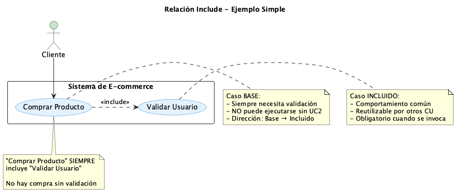
Interpretación:
"Comprar Producto" INCLUYE "Validar Usuario"
Esto significa que no es posible comprar un producto sin validar primero al usuario. La validación es un requisito obligatorio del proceso de compra.
Ejemplo con Múltiples Includes:
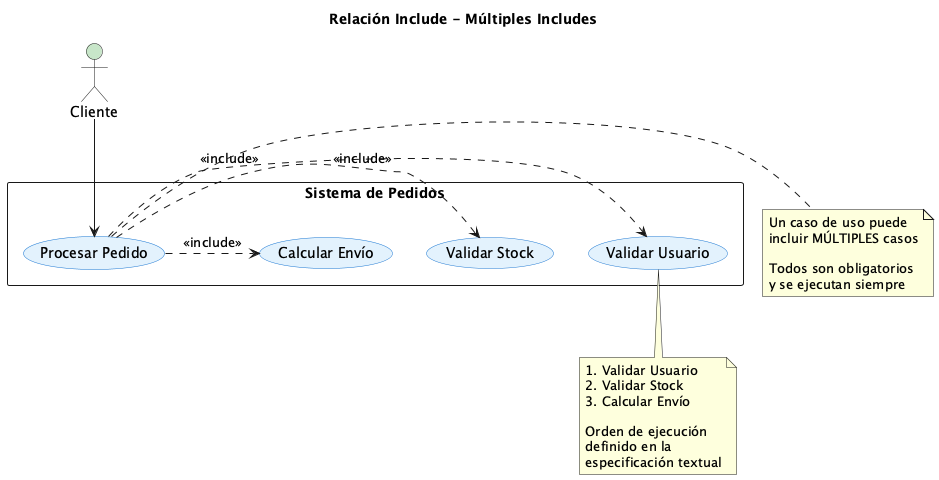
Observación: Un caso de uso puede incluir MÚLTIPLES casos. Todos son obligatorios.
"Procesar Pedido" incluye:
- Validar Usuario (siempre)
- Validar Stock (siempre)
- Calcular Envío (siempre)
El orden de ejecución se define en la especificación textual del caso de uso, no en el diagrama.
Patrón Include Compartido: Ejemplo Liskov Project
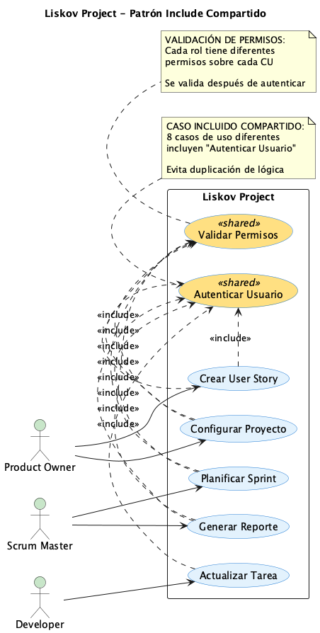
💡 Patrón Importante: Caso Incluido Compartido
En Liskov Project, "Autenticar Usuario" es incluido por 8 casos de uso diferentes:
- Crear User Story
- Planificar Sprint
- Actualizar Tarea
- Generar Reporte
- Configurar Proyecto
- Y más...
Beneficio: Definimos la lógica de autenticación UNA SOLA VEZ y la reutilizamos en todos los CU que la necesitan. Si cambia el proceso de autenticación, solo modificamos un caso de uso.
⚠️ Cuándo NO usar Include
- ❌ Si el comportamiento es opcional (usar Extend)
- ❌ Si el comportamiento solo ocurre bajo ciertas condiciones (usar Extend)
- ❌ Si estás modelando especializaciones de un concepto (usar Generalization)
Regla de oro: Solo usa Include si el caso base es incompleto o no tiene sentido sin el caso incluido.
3.2 Relación Extend (<>)
La relación Extend se utiliza cuando queremos agregar comportamiento opcional o condicional a un caso de uso base. El caso base funciona perfectamente por sí solo, pero bajo ciertas condiciones se pueden ejecutar extensiones.
Características de Extend:
- Opcional: El caso base puede completarse SIN ejecutar la extensión
- Dirección: La flecha va de la extensión → al caso base (¡INVERSA a include!)
- Condicional: Solo se ejecuta si se cumple una condición específica
- Extension Points: El caso base define puntos donde puede extenderse
- Independencia: El caso base NO sabe que puede ser extendido
Ejemplo Simple: Aplicar Descuento
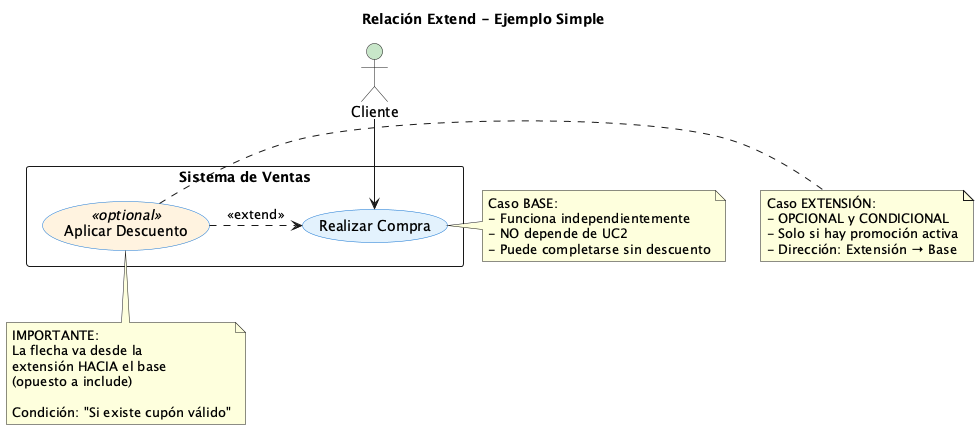
Interpretación:
"Aplicar Descuento" EXTIENDE "Realizar Compra"
Condición: Solo si existe un cupón de descuento válido
El caso base "Realizar Compra" funciona perfectamente sin descuentos. La extensión es una variación opcional del flujo principal.
⚠️ Nota: La flecha va desde la extensión HACIA el base (opuesto a include)
Ejemplo con Múltiples Extensiones:
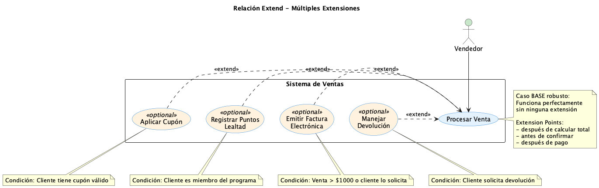
Caso Base: "Procesar Venta" funciona completamente solo.
Extensiones opcionales (cada una con su condición):
| Extensión |
Condición |
| Aplicar Cupón |
Cliente tiene cupón válido |
| Registrar Puntos Lealtad |
Cliente es miembro del programa |
| Emitir Factura Electrónica |
Venta > $1000 o cliente lo solicita |
| Manejar Devolución |
Cliente solicita devolución |
Extension Points (Puntos de Extensión):
Los extension points son lugares específicos en el flujo del caso base donde pueden insertarse las extensiones.
Ejemplo:
Caso de Uso: Procesar Venta
Extension Points:
- después_de_calcular_total: Aquí puede aplicarse un cupón
- antes_de_confirmar_pago: Aquí puede emitirse factura
- después_de_pago: Aquí pueden registrarse puntos
Esto permite insertar el comportamiento de las extensiones en momentos precisos del flujo.
Patrón Extend en Liskov Project:
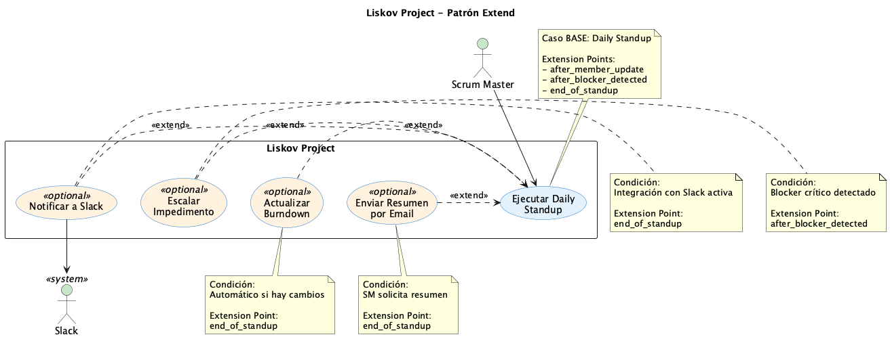
Caso: "Ejecutar Daily Standup"
Flujo base: El equipo se reúne, cada miembro reporta su progreso, SM registra la información.
Extensiones opcionales:
- Notificar a Slack: Solo si la integración con Slack está activa
- Escalar Impedimento: Solo si se detecta un blocker crítico
- Actualizar Burndown: Automático si hay cambios de estado
- Enviar Resumen por Email: Solo si el SM lo solicita
El Daily Standup funciona perfectamente sin ninguna de estas extensiones.
🤔 Include vs Extend: ¿Cómo decidir?
| Pregunta |
Include |
Extend |
| ¿El caso base puede funcionar solo? |
❌ No |
✅ Sí |
| ¿Siempre se ejecuta? |
✅ Siempre |
❌ Solo bajo condición |
| ¿Dirección de la flecha? |
Base → Incluido |
Extensión → Base |
| ¿Ejemplo típico? |
"Login" (obligatorio) |
"Aplicar cupón" (opcional) |
3.3 Relación Generalization (Herencia)
La relación Generalization modela una jerarquía donde un caso de uso hijo hereda el comportamiento de un caso de uso padre más general, agregando o especializando funcionalidad.
Características de Generalization:
- Relación "es-un-tipo-de": El hijo ES UN TIPO DE padre
- Herencia de comportamiento: El hijo hereda todo del padre
- Especialización: El hijo puede agregar o modificar comportamiento
- Sustitución: Donde se espera el padre, se puede usar el hijo (Principio de Liskov)
- Notación: Flecha con triángulo vacío apuntando al padre
Ejemplo Simple: Tipos de Autenticación
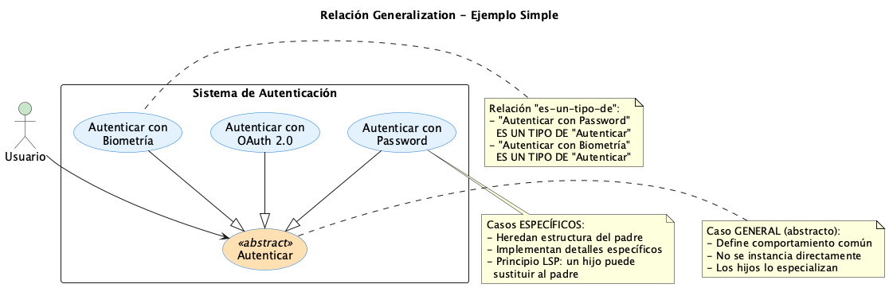
Interpretación:
"Autenticar" es el caso de uso general (puede ser abstracto)
Especializaciones:
- "Autenticar con Password" → Método tradicional con usuario/contraseña
- "Autenticar con Biometría" → Usando huella digital o reconocimiento facial
- "Autenticar con OAuth 2.0" → Delegando a proveedor externo (Google, Facebook)
Cada hijo hereda: Validación de credenciales, creación de sesión, logging
Cada hijo especializa: El mecanismo específico de verificación
Ejemplo Liskov Project: Gestión de Work Items
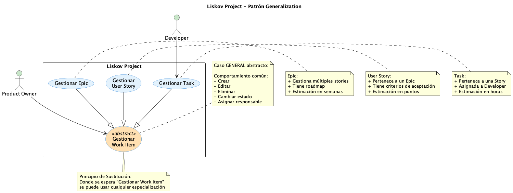
Caso General: "Gestionar Work Item"
Comportamiento común heredado por todos:
- Crear nuevo item
- Editar información básica (título, descripción)
- Cambiar estado (To Do → In Progress → Done)
- Asignar responsable
- Agregar comentarios
- Eliminar item
Especializaciones:
| Caso de Uso |
Comportamiento Adicional |
| Gestionar Epic |
• Gestionar múltiples User Stories
• Definir roadmap
• Estimación en semanas/meses
|
| Gestionar User Story |
• Vincular a Epic padre
• Definir criterios de aceptación
• Estimación en puntos
|
| Gestionar Task |
• Vincular a User Story padre
• Asignar a Developer específico
• Estimación en horas
• Vincular commits de código
|
✅ Cuándo Usar Generalization:
- ✅ Cuando tienes variaciones de un mismo concepto
- ✅ Cuando el comportamiento común es significativo (no trivial)
- ✅ Cuando las especializaciones pueden sustituir al caso general
- ✅ Cuando quieres modelar polimorfismo en tu sistema
❌ Error Común: Mal Uso de Generalization
Incorrecto: "Validar Tarjeta" hereda de "Comprar Producto"
Por qué está mal: "Validar Tarjeta" NO es un tipo de "Comprar Producto". Es una parte obligatoria del proceso de compra.
Relación correcta: "Comprar Producto" INCLUYE "Validar Tarjeta"
Regla: Solo usa Generalization cuando puedas decir "X es un tipo específico de Y"
3.4 Comparación Completa de las Tres Relaciones
📊 Diagrama Comparativo
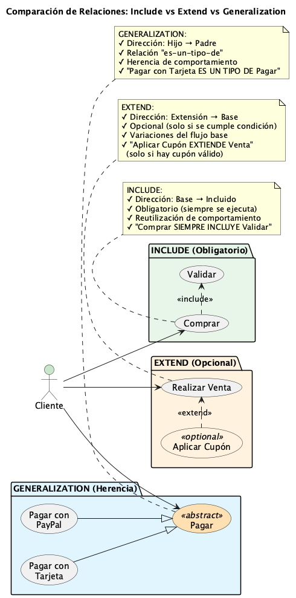
| Aspecto |
Include |
Extend |
Generalization |
| Propósito |
Reutilizar comportamiento obligatorio |
Agregar variaciones opcionales |
Modelar especializaciones |
| Obligatoriedad |
✅ Siempre se ejecuta |
⚠️ Solo bajo condición |
✅ Herencia completa |
| Dirección flecha |
Base → Incluido |
Extensión → Base |
Hijo → Padre |
| Notación |
Línea punteada <> |
Línea punteada <> |
Línea sólida con triángulo |
| Independencia |
❌ Base depende del incluido |
✅ Base independiente |
⚠️ Hijo depende del padre |
| Ejemplo |
"Comprar" incluye "Login" |
"Aplicar Cupón" extiende "Comprar" |
"Pagar con Tarjeta" es tipo de "Pagar" |
| Test para decidir |
"¿Puedo hacer A sin B?" → NO |
"¿A funciona sin B?" → SÍ |
"¿A es un tipo de B?" → SÍ |
🎯 Guía Rápida de Decisión:
- ¿Es comportamiento común obligatorio? → Use INCLUDE
- ¿Es una variación opcional/condicional? → Use EXTEND
- ¿Es una especialización (relación "es-un")? → Use GENERALIZATION
🚀 4. Caso de Estudio: Liskov Project - Vista General
Ahora que dominamos todos los elementos y relaciones, analicemos un sistema completo real: Liskov Project, nuestra herramienta de gestión ágil de proyectos.
📋 Sobre Liskov Project:
Sistema de gestión de proyectos ágiles que implementa Scrum, permitiendo:
- ✅ Gestión de Product Backlog (Epics, User Stories, Tasks)
- ✅ Planificación y ejecución de Sprints
- ✅ Daily Standups digitales con registro de blockers
- ✅ Seguimiento de progreso con métricas (Burndown, Velocity)
- ✅ Integración con GitHub, Slack y Jira
- ✅ Reportes y analytics en tiempo real
Diagrama General del Sistema
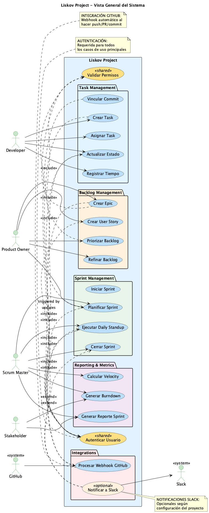
📊 Análisis del Diagrama Completo:
👥 Actores (6 identificados):
| Actor |
Tipo |
Responsabilidades Principales |
| Developer |
Humano |
Ejecuta tareas, registra tiempo, vincula commits |
| Product Owner |
Humano |
Gestiona backlog, prioriza historias, define criterios |
| Scrum Master |
Humano |
Facilita ceremonias, genera métricas, remueve impedimentos |
| Stakeholder |
Humano |
Visualiza reportes, proporciona feedback |
| GitHub |
Sistema |
Notifica commits, PRs, webhooks automáticos |
| Slack |
Sistema |
Recibe notificaciones de eventos importantes |
📦 Casos de Uso Organizados por Módulo:
Sprint Management (4 CU)
- Planificar Sprint
- Iniciar Sprint
- Ejecutar Daily Standup
- Cerrar Sprint
Backlog Management (4 CU)
- Crear Epic
- Crear User Story
- Priorizar Backlog
- Refinar Backlog
Task Management (5 CU)
- Crear Task
- Asignar Task
- Actualizar Estado
- Registrar Tiempo
- Vincular Commit
Reporting & Metrics (3 CU)
- Generar Burndown
- Calcular Velocity
- Generar Reporte Sprint
Integrations (2 CU)
- Procesar Webhook GitHub
- Notificar a Slack
🔗 Patrones de Relaciones Identificados:
- Include compartido: "Autenticar Usuario" es incluido por 8+ casos de uso
- Include de permisos: "Validar Permisos" asegura autorización por rol
- Extend condicional: "Notificar a Slack" extiende múltiples CU según configuración
- Generalization: "Gestionar Work Item" con especializaciones Epic/Story/Task
- Integración automática: GitHub → Procesar Webhook → Actualizar Estado Task
📊 5. Diagramas de Clases UML
📊 Ejemplo de Diagrama de Clases
classDiagram
class Persona {
-nombre: String
-fechaNacimiento: Date
-email: String
+getNombre(): String
+calcularEdad(): int
+enviarEmail(mensaje: String): void
}
class Estudiante {
-numeroEstudiante: String
-carrera: String
+inscribirseEnCurso(curso: Curso): void
+consultarCalificaciones(): List~Calificacion~
}
class Profesor {
-numeroEmpleado: String
-departamento: String
+dictarCurso(curso: Curso): void
+calificarEstudiante(estudiante: Estudiante, nota: float): void
}
class Curso {
-codigo: String
-nombre: String
-creditos: int
+agregarEstudiante(estudiante: Estudiante): void
+removerEstudiante(estudiante: Estudiante): void
}
Persona <|-- Estudiante
Persona <|-- Profesor
Estudiante "*" -- "*" Curso : inscrito en
Profesor "1" -- "*" Curso : dicta
Tipos de Relaciones en UML
Relaciones Fundamentales
- Asociación: Relación general entre clases
- Agregación: Relación "tiene-un" débil
- Composición: Relación "parte-de" fuerte
- Herencia: Relación "es-un" (generalización/especialización)
- Dependencia: Una clase usa otra temporalmente
- Realización: Una clase implementa una interfaz
Multiplicidades y Navegabilidad
Las multiplicidades especifican cuántas instancias de una clase pueden estar relacionadas con instancias de otra clase:
- 1: Exactamente uno
- 0..1: Cero o uno
- *: Cero o más
- 1..*: Uno o más
- 2..5: Entre dos y cinco
🎭 2. Casos de Uso Avanzados
Los casos de uso avanzados van más allá de la identificación básica de funcionalidades, proporcionando especificaciones detalladas que incluyen precondiciones, postcondiciones, flujos alternativos y manejo de excepciones.
Estructura Completa de un Caso de Uso
Plantilla de Especificación de Caso de Uso
- Nombre: Identificador único del caso de uso
- Actores: Entidades que interactúan con el sistema
- Descripción: Resumen del propósito
- Precondiciones: Estado requerido antes de la ejecución
- Trigger: Evento que inicia el caso de uso
- Flujo Principal: Secuencia normal de pasos
- Flujos Alternativos: Variaciones del flujo principal
- Flujos de Excepción: Manejo de errores
- Postcondiciones: Estado resultante tras la ejecución
📊 Diagrama de Casos de Uso Avanzado
graph TD
subgraph "Sistema Académico"
A[Inscribirse en Curso]
B[Consultar Horarios]
C[Procesar Pago]
D[Verificar Prerrequisitos]
E[Generar Comprobante]
end
F[Estudiante] --> A
F --> B
G[Sistema de Pagos] --> C
A --> D
A --> C
C --> E
A -.->|extends| H[Manejar Lista de Espera]
B -.->|includes| I[Autenticar Usuario]
Relaciones entre Casos de Uso
Tipos de Relaciones
- Include: Un caso de uso siempre incluye otro
- Extend: Un caso de uso opcionalmente extiende otro
- Generalización: Un caso de uso hereda de otro más general
Ejemplo Detallado de Caso de Uso
Caso de Uso: Procesar Venta
Actor Principal: Cajero
Actores Secundarios: Sistema de Inventario, Sistema de Pagos
Precondiciones:
- El cajero está autenticado en el sistema
- La caja registradora está operativa
- Hay productos disponibles para la venta
Flujo Principal:
- El cajero inicia una nueva venta
- El cajero escanea o ingresa el código del producto
- El sistema verifica la disponibilidad del producto
- El sistema muestra la información del producto y actualiza el total
- Se repiten los pasos 2-4 para cada producto
- El cajero indica el fin de la venta
- El sistema calcula el total incluyendo impuestos
- El cliente realiza el pago
- El sistema procesa el pago
- El sistema actualiza el inventario
- El sistema genera e imprime el recibo
- La venta se completa exitosamente
Flujos Alternativos:
- A1 - Producto no encontrado: En el paso 3, si el producto no existe, mostrar mensaje de error y permitir reintentar
- A2 - Descuentos: Después del paso 6, aplicar descuentos si corresponde
Postcondiciones:
- La venta queda registrada en el sistema
- El inventario se actualiza
- Se genera el recibo correspondiente
🔧 3. Diagramas UML Avanzados
Diagrama de Secuencia
Los diagramas de secuencia muestran la interacción entre objetos a lo largo del tiempo, representando el intercambio de mensajes en un escenario específico.
📊 Diagrama de Secuencia: Procesar Pedido
sequenceDiagram
participant Cliente
participant Sistema
participant Inventario
participant Pago
participant Email
Cliente->>Sistema: crear pedido
Sistema->>Inventario: verificar disponibilidad
Inventario-->>Sistema: confirmar stock
Sistema->>Cliente: mostrar resumen
Cliente->>Sistema: confirmar pedido
Sistema->>Pago: procesar pago
Pago-->>Sistema: pago exitoso
Sistema->>Inventario: reducir stock
Sistema->>Email: enviar confirmación
Sistema-->>Cliente: pedido confirmado
Diagrama de Estados
Representa los diferentes estados por los que puede pasar un objeto y las transiciones entre estos estados.
📊 Diagrama de Estados: Pedido
stateDiagram-v2
[*] --> Creado
Creado --> Pendiente : confirmar
Pendiente --> Procesando : pagar
Procesando --> Enviado : preparar
Procesando --> Cancelado : cancelar
Enviado --> Entregado : entregar
Entregado --> [*]
Cancelado --> [*]
note right of Pendiente : Esperando pago
note right of Procesando : Verificando stock
Diagrama de Actividades
Modela el flujo de trabajo o proceso de negocio, mostrando las actividades secuenciales y paralelas.
📊 Diagrama de Actividades: Proceso de Compra
flowchart TD
A[Inicio] --> B[Seleccionar Productos]
B --> C{¿Hay Stock?}
C -->|Sí| D[Agregar al Carrito]
C -->|No| E[Notificar Falta Stock]
E --> B
D --> F{¿Continuar Comprando?}
F -->|Sí| B
F -->|No| G[Ir a Checkout]
G --> H[Ingresar Datos de Envío]
H --> I[Seleccionar Método de Pago]
I --> J[Procesar Pago]
J --> K{¿Pago Exitoso?}
K -->|Sí| L[Confirmar Pedido]
K -->|No| M[Mostrar Error]
M --> I
L --> N[Fin]
🔗 4. Integración de Vistas del Sistema
Un análisis completo requiere la integración coherente de múltiples vistas del sistema. Cada diagrama UML proporciona una perspectiva diferente del mismo sistema.
Vistas Arquitectónicas
- Vista Funcional: Casos de uso y requerimientos
- Vista Estática: Diagramas de clases y objetos
- Vista Dinámica: Diagramas de secuencia y actividades
- Vista de Estados: Diagramas de estados
- Vista de Implementación: Diagramas de componentes y deployment
Trazabilidad entre Diagramas
Es fundamental mantener consistencia entre los diferentes diagramas:
- Los actores en casos de uso deben corresponder a clases en el diagrama de clases
- Los mensajes en diagramas de secuencia deben corresponder a métodos en las clases
- Los estados en diagramas de estado deben reflejar el ciclo de vida de los objetos
- Las actividades deben corresponder a casos de uso o métodos específicos
⚠️ Consideraciones Importantes
- No todos los diagramas son necesarios para todos los proyectos
- La complejidad de los diagramas debe ser apropiada para la audiencia
- Los diagramas deben actualizarse cuando cambian los requerimientos
- La herramienta de modelado debe soportar consistencia entre diagramas